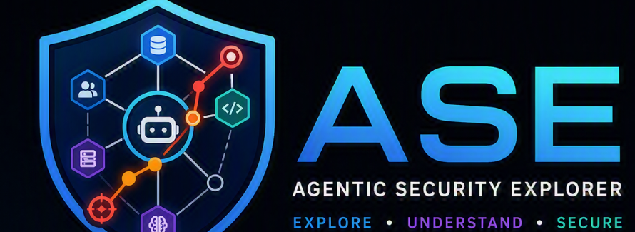
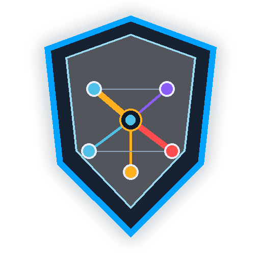
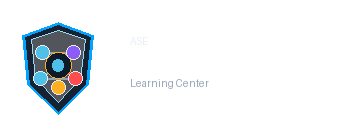

What makes an AI system agentic?
Learn how this concept applies to agentic AI security and how it appears in the ASE Explorer.

Learn Agentic Attack Surfaces, Risks, and Business Impact

Understand what makes agentic systems different from conventional AI applications.

Learn how this concept applies to agentic AI security and how it appears in the ASE Explorer.
Learn how this concept applies to agentic AI security and how it appears in the ASE Explorer.
Learn how this concept applies to agentic AI security and how it appears in the ASE Explorer.
Learn how this concept applies to agentic AI security and how it appears in the ASE Explorer.
Open the Explorer, choose a component related to this topic, inspect risks, and use the basket to test how individual weaknesses can form attack chains.